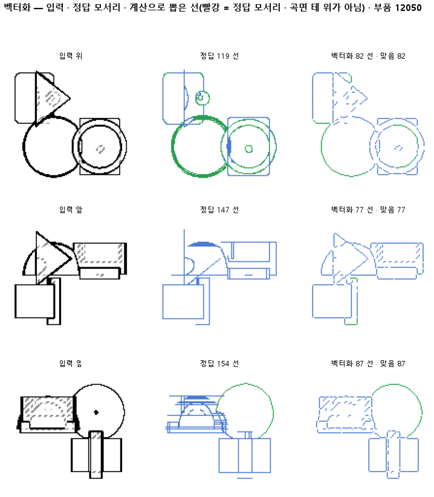

한 줄로
물음: 칠한 선 화소를 갈림길과 끝점에서 끊는 계산만으로, 도면을 선 목록으로 바꿀 수 있을까?
답: 바꾸지 못했다. 정답 모서리를 여섯에 하나꼴로만 찾았다. 정답 선지도를 넣어도 결과가 거의 같았다. 그러니 지금은 계산이 걸림돌이다. 판 137의 칠이 괜찮은지는 아직 모른다. 기준 넷 중 둘을 못 넘었고, 판정은 실패다.
왜 이 판을 했나
정답 모서리는 CAD 부품의 모서리를 도면에 비춘 선이다. 이 모서리를 화소로 칠한 그림이 정답 선지도이고, 판 137이 칠해야 할 답이 바로 이것이다. 하지만 CAD 설계를 짜려면 화소로는 부족하다. 「여기서 저기까지 직선 하나」 같은 선 목록이 필요하다. 이 변환에는 정답이 있다. 그래서 학습 없이 계산만으로 해 보기로 했다.
바꾼 것 하나
학습 모델 대신 계산만 하는 변환기를 붙였다. 칠한 선을 한 화소 두께의 뼈대로 깎는다. 그다음 선이 갈라지거나 끝나는 곳에서 끊는다. 끊은 조각이 곧은 선에서 2화소 넘게 휘었으면 원호로, 아니면 직선으로 본다. 정답 모서리와 2화소 안에 있는 조각은 짝으로 친다. 입력은 판 137이 칠한 시험 부품 299개다. 같은 계산을 정답 선지도에도 돌렸다.
결과

| 이 판 (137의 칠) | 대조 (정답 선지도) | 목표 | 넘었나 | |
|---|---|---|---|---|
| 정답 모서리와 짝 맞음 (F1) | 0.19 | 0.20 | 0.90 · 대조는 0.95 | ✗ · ✗ |
| 짝 맞은 선의 종류 | 0.98 | 0.97 | 0.90 | ✓ |
| 한 모서리를 쪼갠 조각 수 | 0.63 | 0.55 | 1.2 아래 | ✓ |
F1은 「찾은 선 중 맞은 비율」과 「정답 선 중 찾은 비율」을 함께 본 점수다. 1이면 완벽하다. 못 넘은 기준 둘은 같은 F1을 두 입력에서 각각 잰 것이다.
왜 이렇게 나왔나
확인한 것
- 정답을 넣어도 짝이 0.20에 그친다. 그러니 계산이 천장이다.
- 놓친 것이 잘못 그린 것보다 많다. 정답 모서리 중 찾은 비율은 0.16이고, 찾은 선 중 맞은 비율은 0.25다.
- 종류 0.98은 짝이 맞은 선만 놓고 잰 값이라 겉으로만 좋다.
짐작 (아직 확인 안 함)
- 뼈대로 깎으면서 선이 1~2화소 밀려 짝 거리를 벗어났을 수 있다.
- ㄱ자로 꺾이는 꼭짓점에서는 끊지 않아 모서리 둘이 한 조각으로 붙었을 수 있다.
한계
- 시험 부품 299개로, 한 번만 돌렸다. 휨 문턱과 짝 거리는 2화소 하나씩만 썼다.
- 조각 수 0.63이 무엇으로 나눈 평균인지 기록에 없다. 찾은 비율 0.16과도 맞지 않는다. 이 기준은 아래 한계가 없어서 아무것도 못 찾아도 통과한다.
- 정답 선지도에서 0.20이 나온 이유를 아직 설명하지 못했다.
배운 것과 다음
계산이 정답 입력에서도 0.20이면, 그 위에 무엇을 올려도 그보다 높게 나오기 어렵다. 변환기를 먼저 정답 선지도에서 0.95까지 올려야 한다. 판 137의 칠은 그다음에야 잴 수 있다.
- 정답 선지도 몇 장에 뼈대, 끊은 자리, 정답 모서리를 겹쳐 그려 어디서 놓치는지 본다.
- 짝 거리를 넓혀 다시 재서 선이 밀린 탓인지 확인하고, 꺾이는 꼭짓점에서도 끊어 본다.
- 조각 수 평균을 무엇으로 나누는지 확인하고, 아래 한계를 둔다.